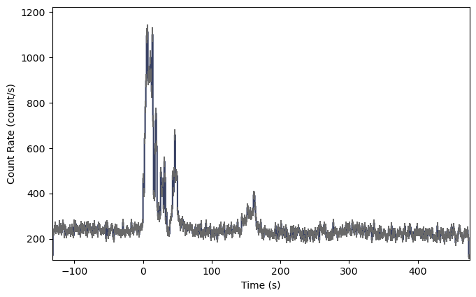
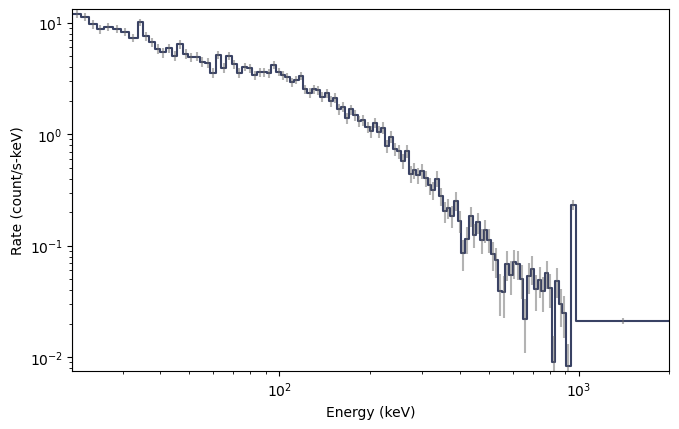
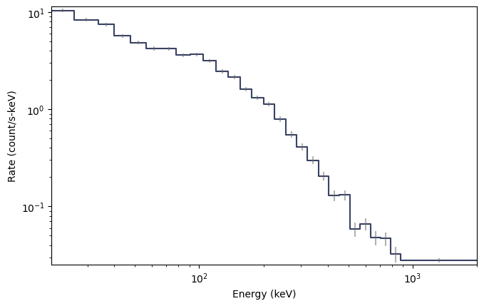
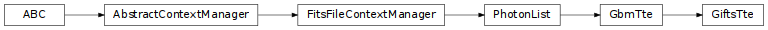

GIFTS TTE Data (gdt.missions.gifts.tte)¶
Note
The GIFTS TTE data implementation and this document are currently based on those provided by the Fermi Gamma-ray Data Tools, and will be revised in future versions.
TTE (Time-Tagged Event) data is a temporally unbinned time-series of “counts” where each
count is mapped to an energy channel. These energy channels are currently a subset of the
128 energy channels provided by a Fermi-GBM GbmTte instance, according to a GIFTS lower energy bound of 20 keV.
We can read a TTE file with
the GiftsTte class.
>>> from gdt.core import data_path
>>> from gdt.missions.gifts.tte import GiftsTte
>>> tte = GiftsTte.open("gifts/gifts_tte_G3_bn220624124_v00.fit")
>>> tte
<GiftsTte: gifts_tte_G3_bn220624124_v00.fit;
trigger time: 677732319.512006;
time range (-131.5836260318756, 474.62935197353363);
energy range (20.394683837890625, 2000.0)>
Alternatively, the TTE can be retrieved from the current GIFTS burst catalog:
>>> from gdt.missions.gifts.catalogs import BurstCatalog
>>> burstcat = BurstCatalog()
>>> tte = [t for t in burstcat.get_tte(trigger_name="bn220624124") if t.detector=="G3"][0]
The TTE FITS files have multiple data extensions, each with metadata information in a header. There is also a primary header that contains metadata relevant to the overall file. You can access this metadata information:
>>> tte.headers.keys()
['PRIMARY', 'EBOUNDS', 'EVENTS', 'GTI']
Access is provided for certain important properties of the data:
>>> # the good time intervals for the data
>>> tte.gti
<Gti: 1 intervals; range (-131.5853500366211, 474.63367199897766)>
>>> # the trigger time
>>> tte.trigtime
677732319.512006
>>> # the time range
>>> tte.time_range
(-131.5836260318756, 474.62935197353363)
>>> # the energy range
>>> tte.energy_range
(20.394683837890625, 2000.0)
>>> # number of energy channels
>>> tte.num_chans
128
We can retrieve the time-tagged events data contained within the file, which
is an EventList class (see
Event Data for more details).
>>> tte.data
<EventList: 157347 events;
time range (-131.5836260318756, 474.62935197353363);
channel range (16, 127)>
The PhotonList base class provides a number of high-level functions,
such as slicing the data in time:
>>> time_sliced_tte = tte.slice_time((-10.0, 10.0))
>>> time_sliced_tte
<GiftsTte:
trigger time: 677732319.512006;
time range (-9.999047994613647, 9.999963998794556);
energy range (20.394683837890625, 2000.0)>
As TTE data is temporally unbinned, it must be initially binned in time prior
to the generation of a lightcurve, where the
Binning Algorithms for Unbinned Data can be used. For
this example, bin_by_time() bins the TTE to the
specified time resolution, converting the TTE to a PHAII object:
>>> from gdt.core.binning.unbinned import bin_by_time
>>> phaii = tte.to_phaii(bin_by_time, 1.024, time_ref=0.0)
>>> phaii
<GiftsPhaii:
trigger time: 677732319.512006;
time range (-132.096, 475.136);
energy range (4.062646865844727, 2000.0)>
Here, we binned the data to 1.024 s resolution, where the reference point at which
to start the binning (in both directions) was at T0=0 s. The resulting
GiftsPhaii object can be used to generate a lightcurve using the
Lightcurve class:
>>> import matplotlib.pyplot as plt
>>> from gdt.core.plot.lightcurve import Lightcurve
>>> lcplot = Lightcurve(data=phaii.to_lightcurve())
>>> plt.show()

To plot the spectrum, no additional binning is required as the
TTE is already necessarily pre-binned in energy. A spectrum plot can be generated
directly from the TTE object without any extra steps using the Spectrum
class:
>>> from gdt.core.plot.spectrum import Spectrum
>>> # integrate over time from 0 - 10 s
>>> spectrum = tte.to_spectrum(time_range=(0.0, 10.0))
>>> specplot = Spectrum(data=spectrum)
>>> specplot.xlim = tte.energy_range
>>> plt.show()

If required, the count spectrum can be rebinned using one of the
Binning Algorithms for Binned Data. For example,
combine_by_factor() combines bins together by an integer
factor:
>>> from gdt.core.binning.binned import combine_by_factor
>>> # rebin the count spectrum by a factor of 4
>>> rebinned_energy = tte.rebin_energy(combine_by_factor, 4)
>>> rebinned_spectrum = rebinned_energy.to_spectrum(time_range=(0.0, 10.0))
>>> specplot = Spectrum(data=rebinned_spectrum)
>>> specplot.xlim = tte.energy_range
>>> plt.show()

See Plotting Lightcurves and Plotting Count Spectra for more on how to modify these plots.
Finally, we can write out a new fully-qualified GIFTS TTE FITS file after some reduction tasks. For example, we can write out our time-sliced data object:
>>> time_sliced_tte.write('./', filename='my_first_custom_tte.fit')
For more details about working with TTE data, see Photon List and Time-Tagged Event Files.
Reference/API¶
gdt.missions.gifts.tte Module¶
Classes¶
|
Class for Time-Tagged Event data. |
Class Inheritance Diagram¶
